Nejbližší utkání
TJ BANÍK VAMBERK
VS
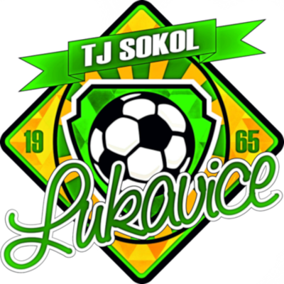
TJ SOKOL LUKAVICE
Poslední utkání
TJ BANÍK VAMBERK
5 : 1
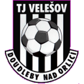
TJ VELEŠOV DOUDLEBY N.O.ROZPIS A VÝSLEDKY SEZÓNY (8. LIGA)
2. KOLO
15.08.2026 (15:00)
TJ Baník Vamberk
vs
TJ Velešov Doudleby n.O.
Doma
4 : 2
Detail
3. KOLO
22.08.2026 (14:00)
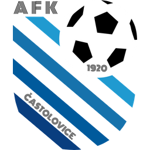
AFK Častolovice vs TJ Baník Vamberk Venku 0 : 0 Detail
OSMIFINÁLE POHÁRU
26.08.2026 (17:30)
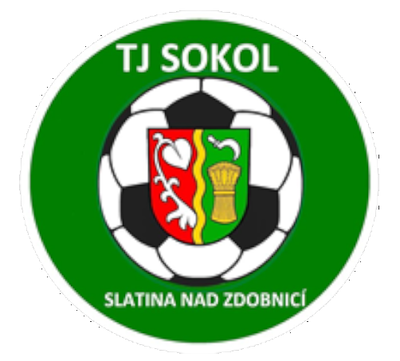
TJ Sokol Slatina n.Z. vs TJ Baník Vamberk Venku 0 : 1 Detail
4. KOLO
29.08.2026 (17:00)
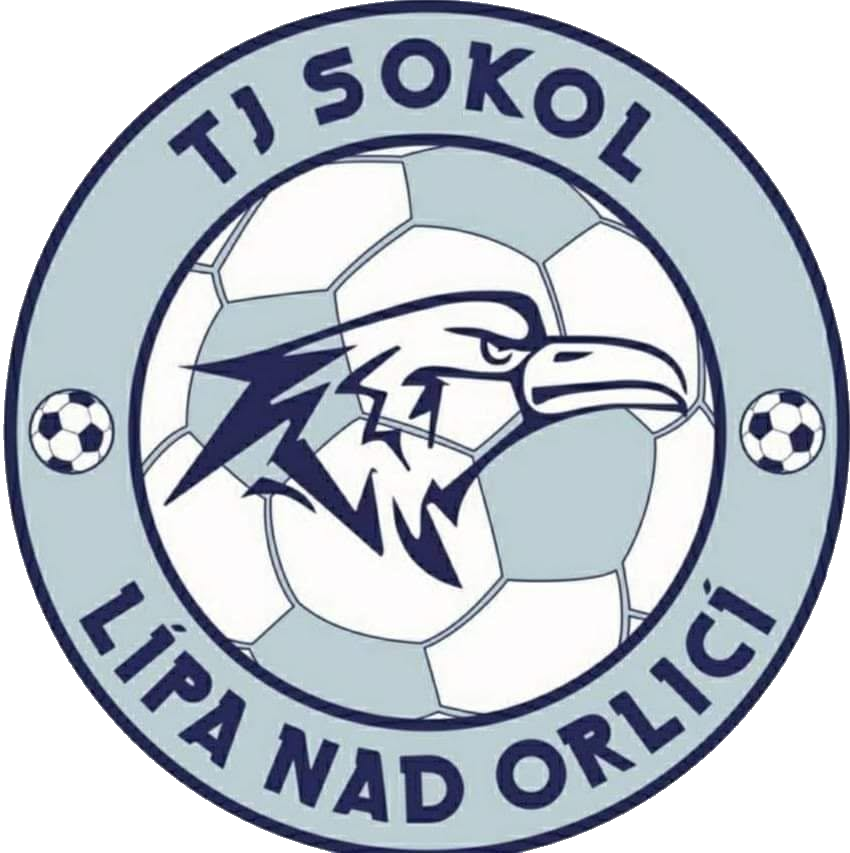
TJ Sokol Lípa n.O. vs TJ Baník Vamberk Venku 1 : 1 Detail
5. KOLO
06.09.2026 (14:45)
TJ Baník Vamberk
vs
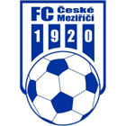
FC České Meziříčí Doma 1 : 1 Detail
6. KOLO
12.09.2026 (17:00)
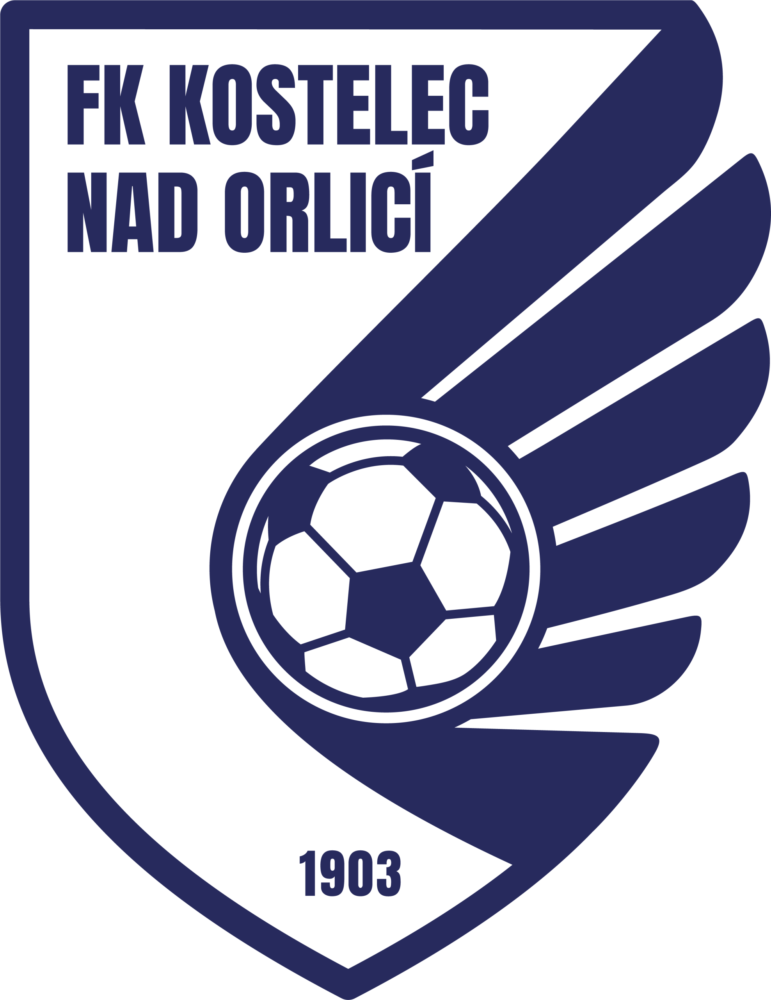
FK Rojek Kostelec n.O. B vs TJ Baník Vamberk Venku 1 : 1 Detail
ČTVRTFINÁLE POHÁRU
16.09.2026 (16:30)
TJ Baník Vamberk
vs
TJ Velešov Doudleby n.O.
Doma
5 : 1
Detail
7. KOLO
20.09.2026 (14:15)
TJ Baník Vamberk
vs
TJ Sokol Lukavice
Doma
- : -
8. KOLO
26.09.2026 (16:30)
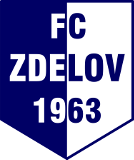
FC Zdelov vs TJ Baník Vamberk Venku - : -
9. KOLO
03.10.2026 (13:45)
TJ Baník Vamberk
vs
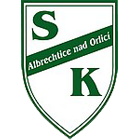
SK Albrechtice n.O. Doma - : -
10. KOLO
11.10.2026 (16:00)
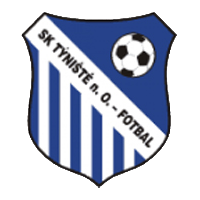
SK Týniště n.O. B vs TJ Baník Vamberk Venku - : -
11. KOLO
17.10.2026 (13:15)
TJ Baník Vamberk
vs
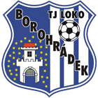
TJ Lokomotiva Borohrádek Doma - : -
1. KOLO
25.10.2026 (14:30)
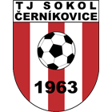
TJ Sokol Černíkovice vs TJ Baník Vamberk Venku - : -